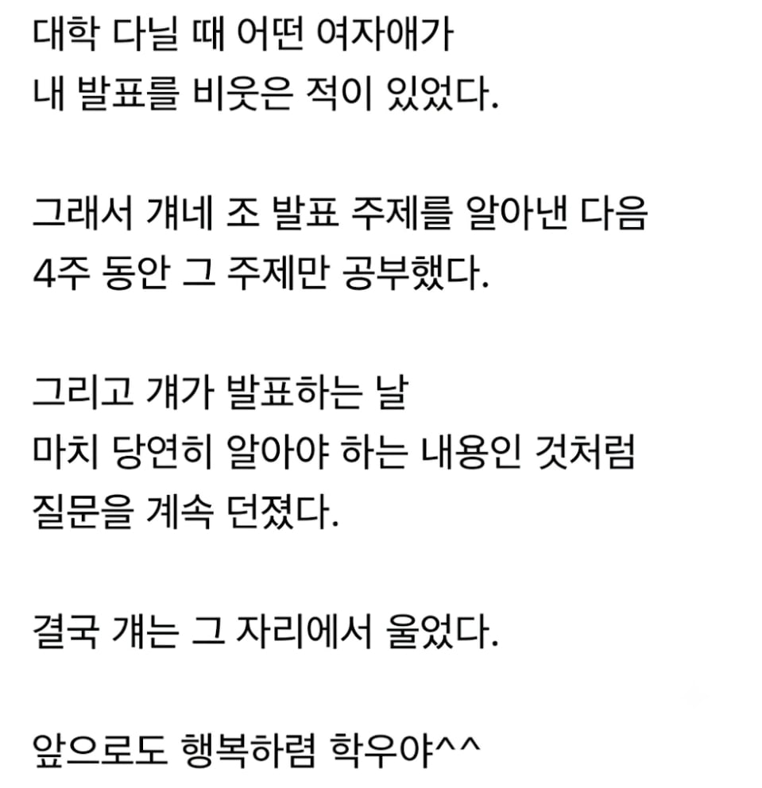

대학교 발표 가짜광기 VS 진짜광기.jpg
댓글
철학과는 수업내용이 저거임 교수가 지금부터 서로 죽여라 함
선생님 병무청입니다
올해까지 입대하지 않으시면 입건될 수 있습니다
네? 이미 전역했다구요? 전산에는 기록이 안되어 있어요 죄송하지만 한번더 가셔야할걸요?
선생님 병원입니다.
총알이.. 영 좋지 않은 곳에 맞았어요
첫댓 조졌네

철학과는 수업내용이 저거임 교수가 지금부터 서로 죽여라 함
선생님 병무청입니다
올해까지 입대하지 않으시면 입건될 수 있습니다
네? 이미 전역했다구요? 전산에는 기록이 안되어 있어요 죄송하지만 한번더 가셔야할걸요?
선생님 병원입니다.
총알이.. 영 좋지 않은 곳에 맞았어요
첫댓 조졌네
병무청 저건 또 무슨밈인거야